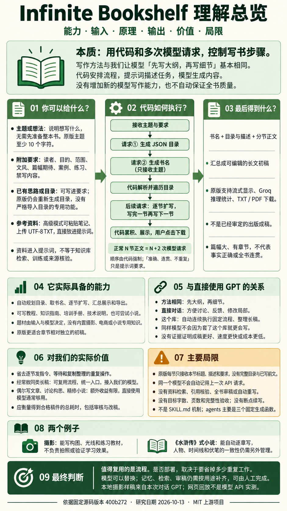

本次对话 GPT 生成样稿
先说清楚它的实现原理
它只是用代码和多次模型请求，
控制写书流程。
目录 → 书名 → 逐节正文 → 汇总展示与下载。
模型负责生成内容，程序负责按顺序调用、循环执行和整理结果。它没有增加新的模型写作能力，也没有自动保证全书质量。
一张图看完：能力、输入、输出、原理、价值与局限

来源：本次研究依据上游 commit 400b272 整理，使用 imagegen 生成，2026-10-13。解释图不代表原版运行截图或模型质量实测。
01 / 代码
控制执行过程
先调用谁、何时写下一节、如何累积正文、怎样展示和下载。
02 / 提示词
描述本次任务
写什么、面向谁、用什么文风，以及要求模型按什么格式返回。
03 / 模型
生成实际内容
目录怎么设计、书名怎么取、每一节怎么写，都依靠调用的模型。
代码组织多次模型请求，顺序生成长稿。 提示词提出内容要求，代码安排调用和数据传递，模型写出目录与正文。没有新增模型能力，也没有全书质量自动验收。
01
程序到底做了什么
将“先出大纲，再逐节写”变成自动执行的代码。
你说“我要写一本手机摄影入门书”，它不会获得摄影专长。程序把这个任务拆成几种请求，套入固定提示词，交给模型生成，再把返回的文字组装成书稿。
- 1
接收主题和写作要求
原版基础入口检查主题至少 10 个字符，然后准备模型客户端。读者、目的、文风等可以写在附加要求里。
- 2
第一次请求：生成目录
要求模型返回 JSON：每个标题对应一段描述，或对应下一层小节。模型决定具体标题、描述与顺序。
- 3
第二次请求：生成书名
只把主题交给书名模板。这次请求不读取前一步目录，也不接收附加要求或参考笔记。
- 4
解析目录，建立书稿
原版在书名返回之后才解析目录 JSON。它按返回的键顺序遍历；遇到子目录就继续向下，遇到最末级小节就准备正文请求。
- 5
后续请求：一节一节扩写
每节发送“本节标题＋描述＋附加要求”，收到正文就追加并显示。完成这一节，再写下一节；原版没有并行生成。
- 6
汇总显示，用户点击下载
目录与正文保存在书稿对象里。点击按钮时汇总文本，或把 Markdown 转为 HTML 再转 PDF；整理和导出不需要模型再写一次。
N 个最末级小节，正常情况下就是 N＋2 次模型请求。
例如：3 节正文＝1 次目录＋1 次书名＋3 次正文＝5 次请求。各节分开生成，让总稿长度可以超过单次输出限制；这不等于自动保证内容完整或连贯。
精确流程依据固定版本的 基础入口与递归调用。这是源码分析，原版应用未完整运行。
02
提示词规定要求，代码规定顺序
它如何控制每一步？
原版使用三类固定提示词，把用户输入填进模板后分别调用模型。下面是源码内容的意译，便于理解；没有把提示词的要求当作模型一定做到的结果。
| 阶段 | 固定要求的主要意思 | 本次输入 | 返回什么 |
|---|---|---|---|
| 目录 | 设计全面目录，省略前言、作者说明、总结等开头结尾内容；基础模式要求最多一层嵌套，标题和描述清晰、内容不重叠。 | 主题＋附加要求 | 嵌套 JSON 对象 |
| 书名 | 给出一个吸引人的书名，只输出书名，不解释、不加装饰。系统模板要求 7–25 个 words（词）。 | 只有主题 | 书名文本 |
| 正文 | 以专业作者身份扩写这一节，内容长、全面、有结构，遵守附加要求，只返回正文。 | 本节标题＋描述＋附加要求 | 流式正文，可含 Markdown |
查看 目录模板、书名模板、正文模板。书名的用户模板对 7 和 25 词表述有歧义，程序没有词数检查，也不能直接换算成中文字符数。
“提出要求”与“强制执行”是两回事。
| 控制方式 | 实际能控制什么 | 没有保证什么 |
|---|---|---|
| 代码调用与循环 | 先目录、再书名、再正文；逐个小节完成；决定每次发送哪些数据。 | 代码不会判断哪种章节安排最好，也不能指定模型内部如何思考。 |
| JSON 模式与解析 | 请求结构化目录，用 JSON 解析结果。 | 没有验证嵌套深度、章节是否重复、教学顺序是否合理。 |
| 提示词中的语义要求 | 让模型尝试写得准确、全面、连贯，符合文风与难度。 | 没有事实核查、全书审稿、自动评分或根据问题重写的循环。 |
| 单次输出上限 | 目录和每节最多 8,000 tokens，书名最多 100 tokens。 | 不是目标字数或全书页数；可能在写完之前达到上限。 |
原版最大的上下文限制：每节不知道完整前文。
正文请求没有完整目录、之前写过的正文或对话历史；原始主题也没有作为独立变量直接传入，主要通过本节标题、描述与要求体现。即使用同一个模型，它也不会自动记得上一次 API 请求写了什么。
因此，“第一章定义了某个术语，第二章必须沿用”“前面埋下的伏笔，后面必须回收”没有得到程序层面的保障。
所以，它算不算 Skill？
可以把固定模板理解为一套写作指令，但原仓库没有 SKILL.md 技能机制。三个文件放在 agents/ 目录里，实际是目录、书名和正文生成函数。流程由程序预先规定，没有独立研究员去查资料、编辑审稿，也没有模型自主决定下一步的机制。
高级模式、参数与仓库组成
高级模式增加文风、难度、已有笔记和 UTF-8 TXT 上传。参考文本直接拼进目录与正文提示词；没有分块检索、资料库匹配、引用溯源或模型训练。目录模板提出“300 页以上”的要求，程序不计算页数，也不按不足页数自动补写。书名仍只接收主题。
目录与正文的 temperature 为 0.3，书名为 0.7。这些参数影响生成变化程度，不能保证每次结果相同，更不能保证事实正确。
仓库主要包含 Python＋Streamlit 界面、Groq 模型调用、三个提示词函数、书稿对象、推理统计和 TXT/PDF 下载工具。它没有内置模型权重、数据库持久保存、断点续写或出版编辑系统。
03
你给什么，它交付什么
一个主题就能启动，更明确的要求能减少偏离。
最低输入：写作主题
例如“给零基础读者写一份手机摄影入门指南”。原版基础模式主题至少 10 个字符；不是必须先提供现成大纲或资料。
建议补充：读者、目的与范围
谁来读？读完能做什么？涵盖哪些内容？不要涉及什么？用什么文风、案例和练习？有已有笔记时，可在高级模式传入。
指定资料能让生成围绕资料展开，但项目不会自动证明资料或生成结论正确。
主要输出：可编辑的长文初稿
- 一个书名。
- 标题和描述组成的目录。
- 按最末级小节生成的正文。
- 页面中的整份稿件，及 TXT/PDF 下载入口。
它没有把你输入的“思路”训练成新模型。输出的内容水平依然来自模型；篇幅大、有章节，也不等于达到出版质量。
摄影任务示例
主题：给零基础读者写一份手机摄影入门指南。
要求：中文；无需购买器材；用杯子和窗边自然光练习；给出操作步骤、问题排查和复盘方法；不同手机的操作要注明差异。
得到：构图与主体 → 自然光与清晰度 → 拍摄练习与复盘，共三节文字教材。下面可以直接读到这份保存好的样稿。
三节是本地示例的安排，原版没有固定三节限制。摄影样稿生成了教材和练习设计；本次没有拍摄照片，也没有验证读者的实际进步。
04 / 阅读实际产物
你输入什么，最后拿到什么？
B
拿到的长文初稿
1
规划目录决定每节写什么
2
生成书名给初稿命名
3
逐节扩写分别请求模型
4
汇总导出合成完整文件
正在载入 GPT 样稿…
完整样稿可直接下载
展开实验记录与来源
载入中…
05
与你直接让模型写书相比
流程可以自动化，写作能力没有因此增加。
你直接说“先给大纲，确认后再逐章写”，已经能使用相同的方法。这个库把后面的反复调用与整理交给程序执行。相同模型、相同资料、相同指令和上下文下，目前没有证据证明它能写出更好的内容。
| 你关心的事 | 直接使用 ChatGPT / 模型 | 这个项目增加了什么 |
|---|---|---|
| 构思与大纲 | 可以先讨论题材、人物或教学目标，多轮修改大纲。 | 用固定模板一次生成目录，原流程没有等待你逐章审定的步骤。 |
| 逐节写正文 | 可以反复要求“继续写下一节”，并插入具体反馈。 | 程序顺序调用各节，减少逐节发指令的操作。 |
| 共享前文 | 可在对话中提供前文与反馈，仍受上下文长度限制。 | 原版每节只拿本节标题、描述与要求，没有完整前文。 |
| 修改和精修 | 容易针对一句话、一个人物或某段结构来回修改。 | 原版主要完成一轮生成，缺少全书编辑与自动重写循环。 |
| 统一整理和下载 | 视所用产品功能而定，也可以自己整理成文档。 | 已接好流式显示、稿件累积、统计和 TXT/PDF 下载。 |
| 内容质量与成本 | 取决于模型、资料、上下文与修改次数。 | 没有质量或成本优势的实测结论。自动执行连续发起多次请求；使用按量收费接口时，会累积用量与费用。 |
对你目前的用途，我们的判断
如果只是偶尔写文章、讨论大纲、尝试摄影教材或精修小说，额外收益确实有限。直接和模型交流已经可以完成主要工作。只有当重复操作与统一整理变成明显负担时，这套流程的便利才更突出。
衡量价值应该看“得到一份合格稿件，总共省了多少时间”，包括生成后的核查、删改与重写。自动生成的字数多，不能直接当作价值高。
06
是只适合特定领域吗
题材可以更换，适用性主要取决于文章的组织方式。
它没有摄影、电商或编程专用知识。换一个主题，仍由所接模型根据已有能力生成内容；固定的是“目录后分节扩写”的方法。我们判断，章节相对独立、可以先分解再展开的非虚构初稿更适合这种原版流程。这个判断来自流程结构，尚未做跨题材质量对照实验。
| 内容方向 | 可以提供的帮助 | 实际使用前还缺什么 |
|---|---|---|
| 入门指南、知识介绍 | 分解概念，生成解释、例子与练习，形成第一稿。 | 核对知识、修正重复，验证步骤能否执行。 |
| 内部培训、操作手册 | 把已有笔记组织成章节，减少重复扩写和整理。 | 提供真实业务流程与规则，审核案例和适用条件。 |
| 技术教程 | 生成概念说明、示例代码和教学结构。 | 运行代码，核对版本、依赖与结果；原版没有执行验证。 |
| 资料型研究报告 | 有足够资料时，可辅助组织与表达。 | 检索、来源引用、数据核查、论证检查，原版均未实现。 |
| 复杂长篇小说 | 生成章节与局部正文，自动减少逐章操作。 | 人物设定、时间线、伏笔、长期记忆和全书审稿。 |
能写一本入门文字教材。
把“手机摄影”拆成构图、光线、拍摄练习，再逐节解释。目录、例子、清单和练习来自模型，程序负责连续生成和汇总。
它不会因此拥有新的摄影判断能力，也不负责拍照、审片或验证课程效果。页面中的概念人工核对，是本次研究另外做的工作。
阅读手机摄影样稿 →能逐章写，难以自动统筹全书。
你给时代、人物、冲突和章节要求，模型可以出目录与正文。若有 100 个需扩写的小节，原流程正常会安排 102 次模型请求。
但写后面的章节时，原版没有完整前文。比如某人物前面已经离场、某个秘密尚未揭开，后文仍可能矛盾。这是说明风险的假设例子，没有实际生成百章小说做测评。
它节省逐章操作，人物塑造和情节一致性仍要靠额外上下文设计与编辑。
07
怎么决定值不值得用
先确认你需要自动化多少重复工作。
额外收益有限
偶尔写一篇文章、边聊边改大纲、精修小说、做个别教材。你需要频繁反馈与调整，直接使用模型通常已经够用，不必为这些需求专门部署原项目。
可以复用流程或代码
经常制作结构类似的长文初稿，希望一次启动后顺序完成；需要自有模型、统一输入与下载入口。此时省下的是调用、等待与整理工作。
要补齐相应工作
资料型内容需要检索与引用核验；复杂小说需要人物设定、前文记忆和一致性检查。正式使用还需要审稿与重写，这些工作也可以由人工完成。
内部模型可以替换。
这套流程不依赖某个模型的权重。将各阶段接到我们的模型接口，仍可执行“目录 → 书名 → 正文”。模型更换会影响内容、速度与费用，但不会自动补齐缺失的检索、记忆和审核。
原版绑定 Groq 客户端、模型 ID 和专属统计字段。书名函数虽然接收模型参数，实际写死 Maverick；只改界面选项不够。我们的配套服务已经独立适配 OpenAI 兼容的 Chat Completions 接口，地址、模型名和密钥在本地服务端配置。
当前对话 GPT 可以直接写出并保存样稿。网页每次点击都自动生成新主题，需要程序可访问的模型接口；当前演示没有连接到这次聊天的模型会话。
为什么不建议原样照搬部署？
截至研究日期 2026-10-13，原版模型列表已过时。Groq 官方记录 Maverick 于 2026-03-09 停用；Scout 于 2026-07-17 对免费和开发者账户停用，部分企业合同账户例外。原版列表中的 DeepSeek R1 Distill 与旧 Kimi K2 也已停用。
基础入口与书名函数写死 Maverick，普通账户原样运行预计会失败，需要先替换实际接口与模型。这是依据源码和停用记录的判断，本次没有向停用模型发请求。
依据 Groq 官方模型停用记录、书名函数。可用模型以实际服务清单为准。
08
哪些看过源码，哪些实际验证过
原版、本地适配和保存样稿分别说明。
| 项目 | 上游原版 | 本次研究演示 |
|---|---|---|
| 界面与接口 | Python＋Streamlit，调用 Groq。 | 独立 HTML 页面＋本地 Python 服务，适配自己的兼容模型接口。 |
| 正文上下文 | 本节标题、描述和附加要求，没有完整前文。 | API 适配版额外传完整目录，以及各已写章节开头 600 字符的摘录；不是模型摘要，效果未实测。 |
| 展示进度 | 正文按模型 token 流逐步显示。 | 真实接口按阶段与整节返回；保存样稿按人为延时回放。 |
| 文件输出 | 用户点击下载 TXT/PDF，PDF 由 WeasyPrint 转换。 | Markdown/TXT 下载，浏览器打印存 PDF；本次未实际验证 PDF 输出。 |
| 摄影与电商样稿 | 不是原版这次运行的结果。 | 本次对话 GPT 生成后保存；网页回放不执行模型 API 请求。 |
当前能作为证据的结果
- 固定版本源码已核对：调用顺序、提示词、每节输入、统计与下载路径。
- 原作者公开了两份历史长稿：大语言模型基础 75,136 字符、Java 数据结构与算法 175,125 字符。字符含空格换行，不能换算成章数或页数；未重新生成，也未全面核验质量。
- 本次摄影样稿 3 节、3,280 个正文字符；电商样稿 3 节、2,987 个正文字符，可直接阅读。
- 此前页面已验证回放、停止恢复、样稿切换和 MD/TXT 下载；本地接口 16 项测试使用伪模型服务验证调用合约。
尚未验证的部分
没有完整运行原版 Streamlit 应用；没有配置并实测我们的真实模型 API；没有证明比直接使用相同模型更好；没有测原版速度、费用、PDF 排版或“300 页”；没有真实拍摄和教学效果实验。
这份网页展示的是对机制与价值的研究结论，加上可阅读的对话样稿。静态版本可阅读与回放保存内容，生成新主题需另接模型服务。保存样稿、假服务测试和源码要求，都不能当作真实模型 API 性能或成稿质量的证明。
研究版本与一手资料
研究日期：2026-10-13。固定 commit：400b272175945d35eaefa68aefe9106fa9d7e467。上游 MIT License，Copyright (c) 2024 Benjamin Klieger。
摄影基础概念另由本次研究人工核对：Apple 相机操作、Adobe 三分构图、Nikon 光线说明。这些核查不是原版自动完成的功能。
它优化的是调用与整理流程，模型本身的写作能力没有因此增加。
是否有价值，取决于你能省下多少重复操作，以及生成后还要花多少时间审核与改稿。
回到顶部 ↑